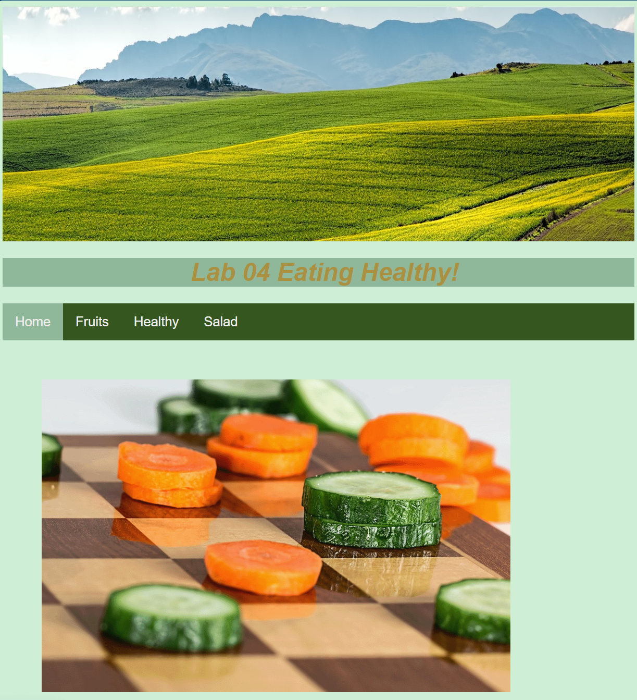
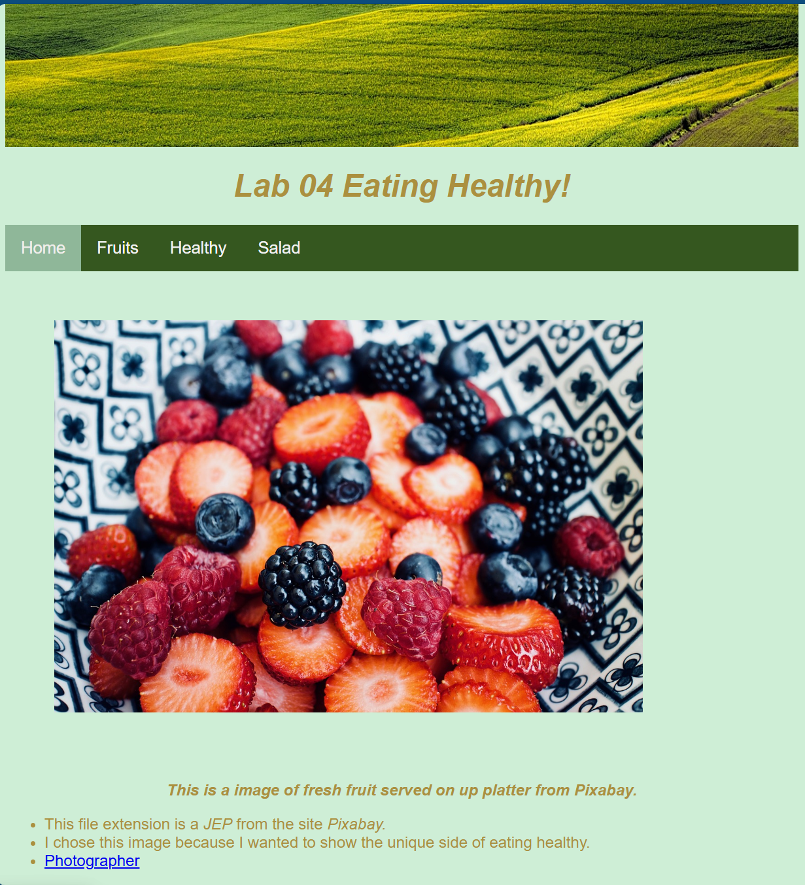
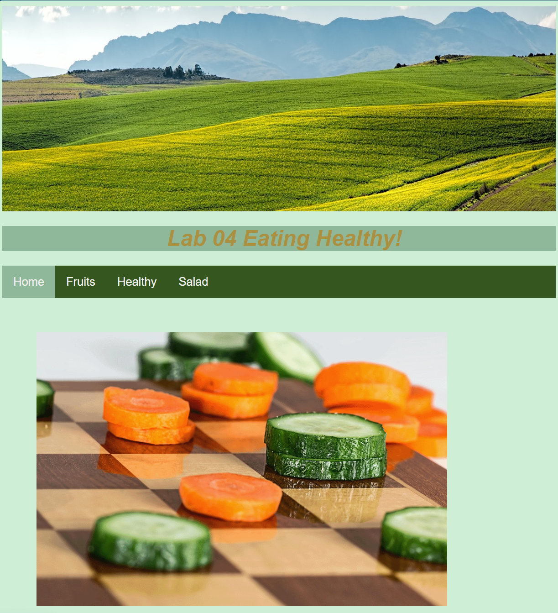
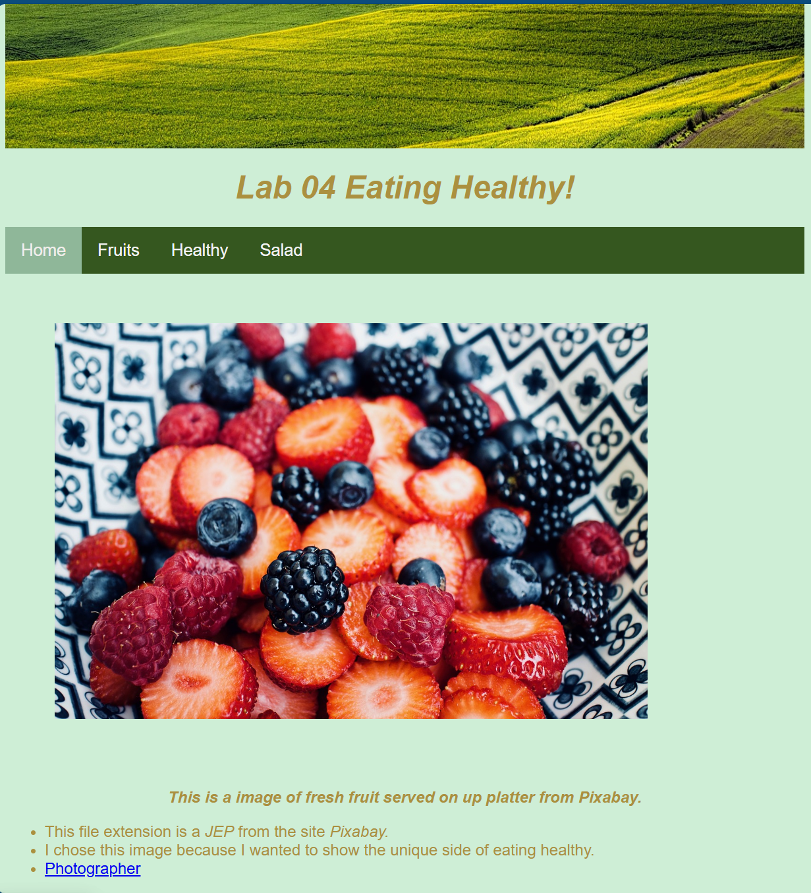

Lab 04 Project:
I was very excited about this lab because
I got a chance to create multiple pages that
interact with one another. Incorporating images
was very exciting. Once I started getting the hang of
creating multiple pages this lab was much easier than I thought
Lab O8
Pixabay site
Google site